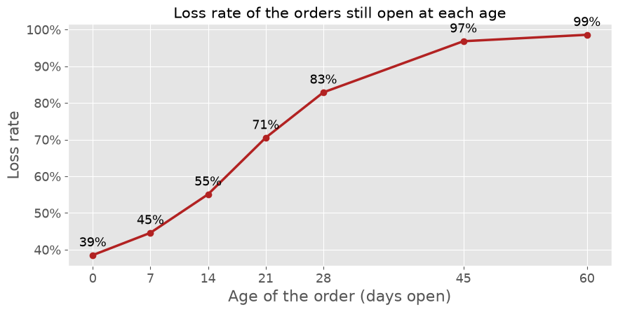
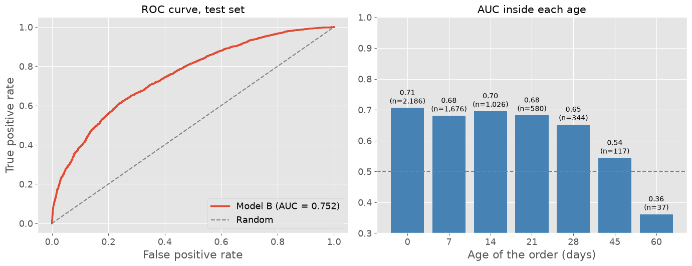
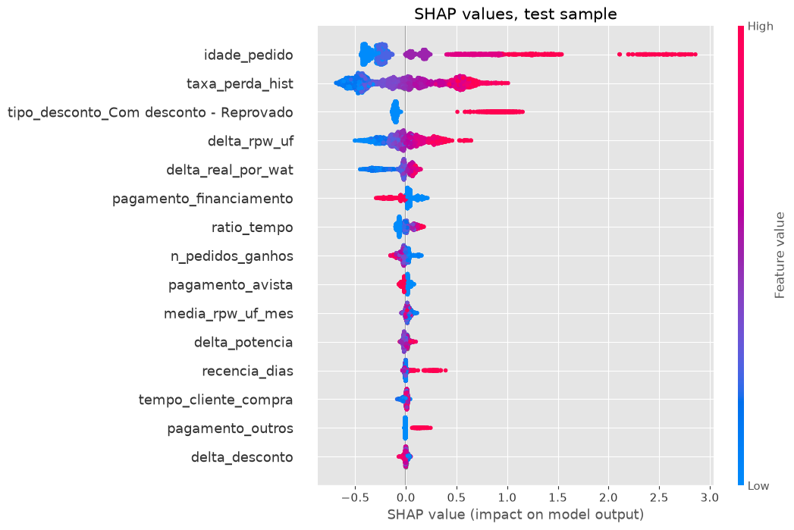

Previsão de perda de vendas: priorizando pedidos em aberto com XGBoost, sem vazamento de dados
Hugo Batista da Silva
Linguagem: Python (pandas, XGBoost, SHAP, scikit-learn) · Tipo: projeto profissional, reconstruído com dados sintéticos · Código: github.com/batistugo/sales-loss-prediction
Sobre o projeto
Em uma distribuidora de equipamentos de energia solar, os clientes são integradores que compram kits fotovoltaicos. Cada orçamento vira um pedido de venda, que pode ser ganho ou perdido, e a equipe comercial tem centenas de pedidos em aberto ao mesmo tempo. A pergunta era: quais pedidos em aberto têm mais chance de serem perdidos, e por quê?
Desenvolvi o modelo e o coloquei em produção: uma rotina diária pontua os pedidos em aberto, uma rotina semanal retreina o modelo e uma API entrega ao sistema comercial um ranking com o nível de prioridade e os três principais motivos de risco de cada pedido.
Os dados da empresa não podem ser publicados; por isso, para este portfólio, o projeto inteiro foi reconstruído com dados sintéticos que preservam a estrutura da base original. Um efeito colateral interessante é que conhecemos a probabilidade real de perda de cada pedido, o que permite comparar o modelo com o melhor resultado teoricamente possível.
O principal achado: um vazamento de dados escondido na melhor variável
A variável mais importante do modelo original comparava o tempo do pedido com o tempo habitual do cliente. O problema: no treino, esse tempo era o número de dias até o desfecho; em produção, era o número de dias até hoje. Mesmo nome, duas coisas diferentes.
Como os pedidos perdidos demoram muito mais para fechar do que os ganhos (24 dias contra 12, em média), o modelo aprendeu com uma informação que só existe depois do desfecho, um caso clássico de vazamento de dados (data leakage). A correção foi treinar com snapshots: cada pedido fechado é “fotografado” em várias idades (0, 7, 14, 21, 28, 45 e 60 dias) enquanto ainda estava em aberto, exatamente como um pedido em aberto é visto em produção.

| Modelo | Avaliação | AUC |
|---|---|---|
| Abordagem original | validação própria | 0,762 |
| Abordagem original | condições reais de uso | 0,693 |
| Abordagem com snapshots (final) | condições reais de uso | 0,752 |
| Probabilidade real (teto teórico) | na criação do pedido | 0,758 |
A validação original prometia uma AUC de 0,76 que o modelo não conseguia entregar. O modelo com snapshots chega a esse patamar de forma honesta.
Outras lições sobre validação
- Histórico no tempo certo (point-in-time). As variáveis do cliente (ticket habitual, desconto, tamanho do kit, preço, taxa de perda) usam apenas os pedidos que já estavam fechados na data de criação. Somas acumuladas ordenadas pela data de criação, a abordagem clássica, usam silenciosamente desfechos do futuro.
- A etapa do pedido é uma foto do desfecho. Incluí-la como variável dá AUC = 1,0; um modelo perfeito é o sintoma mais claro de vazamento de dados.
- O conjunto de teste nunca escolhe o modelo. A parada antecipada (early stopping) usa uma janela de validação temporal separada.
- Os dados recentes têm censura à direita. Os pedidos criados nos últimos 60 dias ficam fora da avaliação, porque só os rápidos (em sua maioria, ganhos) tiveram tempo de fechar.
- Clientes novos não são descartados. O XGBoost lida com valores ausentes, então os 15% de pedidos sem nenhuma compra anterior permanecem no treino, em vez de serem eliminados por um
dropna().
Avaliação

O modelo tem boa calibração (no decil em que prevê 86% em média, 89% dos pedidos foram perdidos) e, no momento da criação, captura cerca de 80% da discriminação possível acima de um chute aleatório, em comparação com a probabilidade real usada para gerar os dados.
Explicação com SHAP

A idade do pedido, a taxa de perda histórica do cliente, um desconto recusado e um preço acima do mercado do estado são os principais fatores de risco. Um resultado parece estranho à primeira vista: o financiamento aparece reduzindo o risco, embora pedidos financiados sejam mais perdidos. Trata-se de uma interação com a idade: os pedidos financiados que são ganhos demoram mais para fechar por causa da análise do banco; assim, um pedido financiado ainda em aberto após duas semanas é normal, enquanto um pedido à vista na mesma situação provavelmente foi abandonado. Um bom lembrete de que uma variável nunca deve ser interpretada isoladamente.
Notebooks
A análise completa, com todo o código, está em quatro notebooks no repositório: